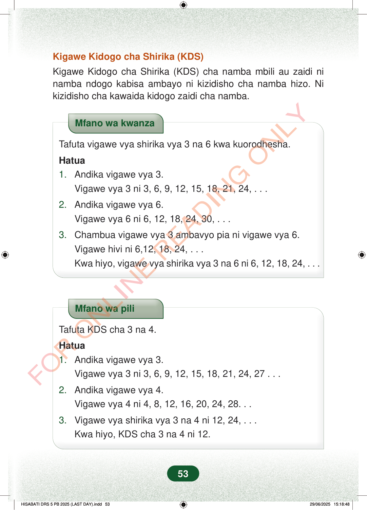

Kigawe Kidogo cha Shirika (KDS)Kigawe Kidogo cha Shirika (KDS) cha namba mbili au zaidi ninamba ndogo kabisa ambayo ni kizidisho cha namba hizo. Nikizidisho cha kawaida kidogo zaidi cha namba.Mfano wa kwanzaTafuta vigawe vya shirika vya 3 na 6 kwa kuorodhesha.Hatua1.Andika vigawe vya 3.Vigawe vya 3 ni 3, 6, 9, 12, 15, 18, 21, 24, . . .2.Andika vigawe vya 6.Vigawe vya 6 ni 6, 12, 18, 24, 30, . . .3.Chambua vigawe vya 3 ambavyo pia ni vigawe vya 6.Vigawe hivi ni 6,12, 18, 24, . . .Kwa hiyo, vigawe vya shirika vya 3 na 6 ni 6, 12, 18, 24, . . .Mfano wa piliTafuta KDS cha 3 na 4.Hatua1.Andika vigawe vya 3.Vigawe vya 3 ni 3, 6, 9, 12, 15, 18, 21, 24, 27 . . .2.Andika vigawe vya 4.Vigawe vya 4 ni 4, 8, 12, 16, 20, 24, 28. . .3.Vigawe vya shirika vya 3 na 4 ni 12, 24, . . .Kwa hiyo, KDS cha 3 na 4 ni 12.53
Kigawe Kidogo cha Shirika (KDS)
Kigawe Kidogo cha Shirika (KDS) cha namba mbili au zaidi ni namba ndogo kabisa ambayo ni kizidisho cha namba hizo. Ni kizidisho cha kawaida kidogo zaidi cha namba.
Mfano wa kwanza
Tafuta vigawe vya shirika vya 3 na 6 kwa kuorodhesha.
Hatua 1. Andika vigawe vya 3. Vigawe vya 3 ni 3, 6, 9, 12, 15, 18, 21, 24, . . .
2. Andika vigawe vya 6. Vigawe vya 6 ni 6, 12, 18, 24, 30, . . .
3. Chambua vigawe vya 3 ambavyo pia ni vigawe vya 6. Vigawe hivi ni 6,12, 18, 24, . . . Kwa hiyo, vigawe vya shirika vya 3 na 6 ni 6, 12, 18, 24, . . .
Mfano wa pili
Tafuta KDS cha 3 na 4.
Hatua 1. Andika vigawe vya 3. Vigawe vya 3 ni 3, 6, 9, 12, 15, 18, 21, 24, 27 . . .
2. Andika vigawe vya 4. Vigawe vya 4 ni 4, 8, 12, 16, 20, 24, 28. . .
3. Vigawe vya shirika vya 3 na 4 ni 12, 24, . . . Kwa hiyo, KDS cha 3 na 4 ni 12.
53
Kigawe Kidogo cha Shirika (KDS)Kigawe Kidogo cha Shirika (KDS) cha namba mbili au zaidi ni namba ndogo kabisa ambayo ni kizidisho cha namba hizo.Ni kizidisho cha kawaida kidogo zaidi cha namba.Mfano wa kwanza unaonyesha jinsi ya kupata vigaw e vya shirika vya 3 na 6 kwa kuorodhesha. Vigaw e vya shirika vilivyopatikana ni 6, 12, 18 na 24.Mfano wa kwanzaTafuta vigawe vya shirika vya 3 na 6 kwa kuorodhesha.Hatua1.Andika vigawe vya 3.Vigawe vya 3 ni 3, 6, 9, 12, 15, 18, 21, 24, . . .2.Andika vigawe vya 6.Vigawe vya 6 ni 6, 12, 18, 24, 30, . . .3.Chambua vigawe vya 3 ambavyo pia ni vigawe vya 6.Vigawe hivi ni 6,12, 18, 24, . . .Kwa hiyo, vigawe vya shirika vya 3 na 6 ni 6, 12, 18, 24, . . .Mfano wa pili unaonyesha jinsi ya kupata KDS cha 3 na 4. Vigaw e vya shirika ni 12 na 24, hivyo KDS ni 12.Mfano wa piliTafuta KDS cha 3 na 4.Hatua1.Andika vigawe vya 3.Vigawe vya 3 ni 3, 6, 9, 12, 15, 18, 21, 24, 27 . . .2.Andika vigawe vya 4.Vigawe vya 4 ni 4, 8, 12, 16, 20, 24, 28. . .3.Vigawe vya shirika vya 3 na 4 ni 12, 24, . . .Kwa hiyo, KDS cha 3 na 4 ni 12.